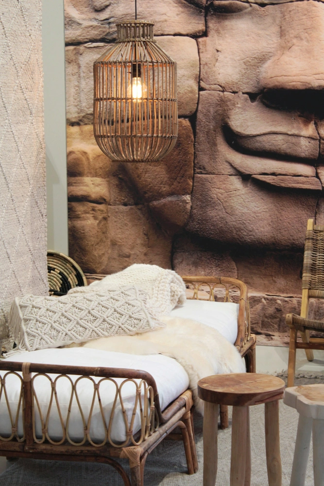
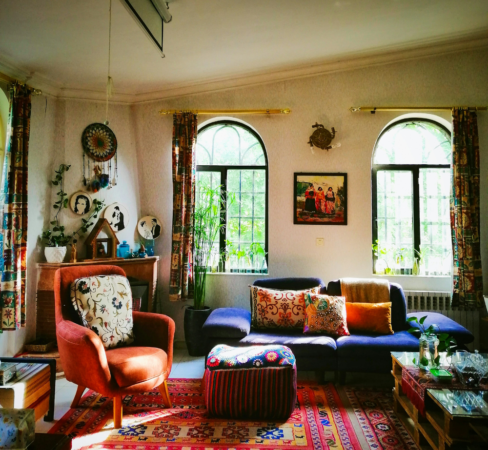
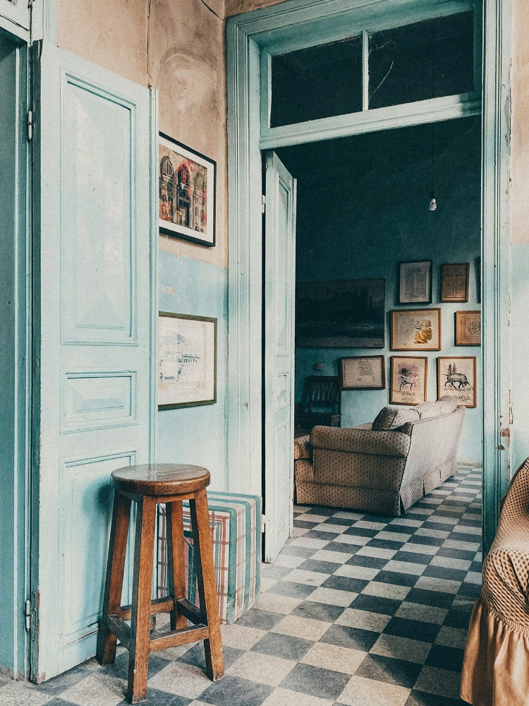
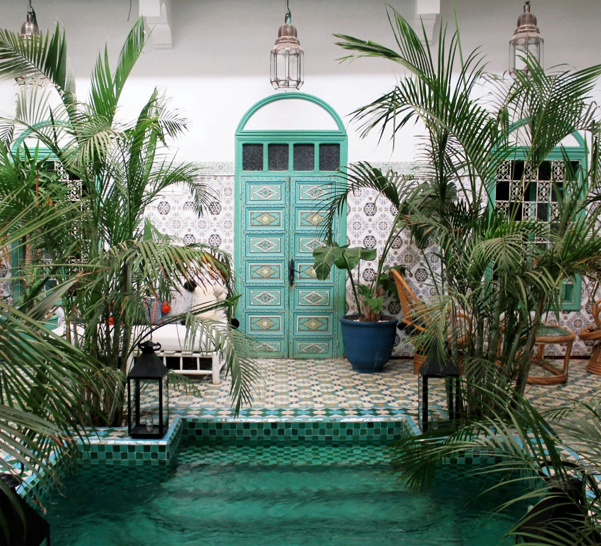
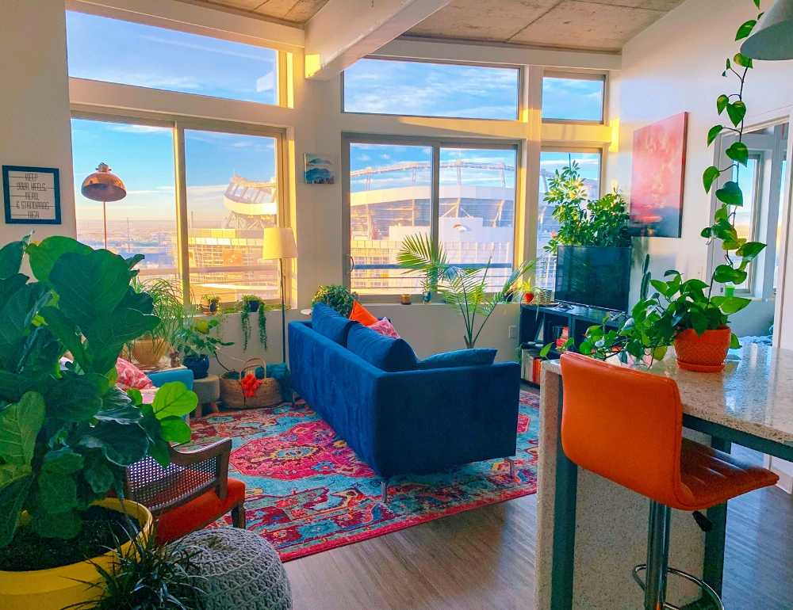
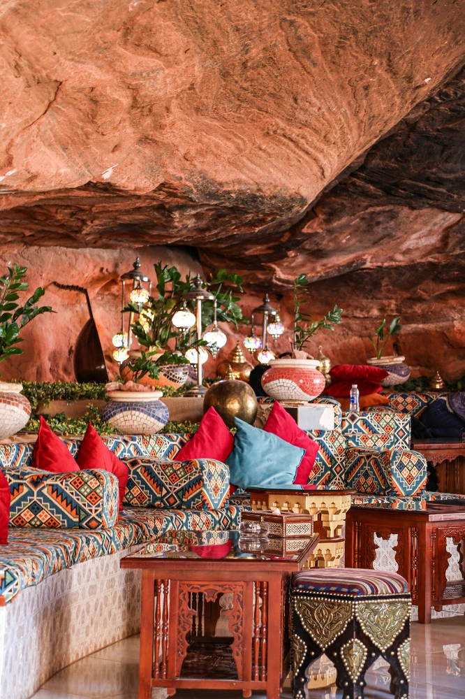
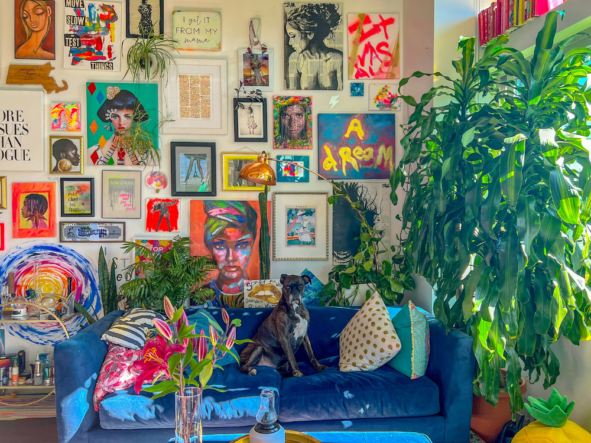

Maximalist
Maximalist style celebrates creativity, freedom, and layered textures. Inspired by nomadic lifestyles and global influences, it mixes colours, patterns, and vintage pieces to create relaxed and expressive interiors.

Maximalist Style at a Glance
- Origin
- 19th-century European artistic communities
- Common Materials
- Rattan, wood, linen, cotton, ceramics
- Where it Began
- France, particularly among artists and writers in Paris
- Typical Colours
- Earth tones, terracotta, mustard, deep reds, warm neutrals
- Core Ideas
- Creative freedom and personal expression
- Key Elements
- Layered textiles, plants, vintage furniture, handmade objects

What Defines Maximalist Style?
Origins of the Boho
Maximalist interior style—often shortened to “boho”—grew from the lifestyles of artists, writers, and travellers who rejected conventional social norms in 19th-century Europe. These communities valued creativity, freedom, and cultural exchange, and their homes often reflected collections of objects gathered through travel, art, and personal experience.
Characteristics of Maximalist Interiors
Unlike more structured design styles, Maximalist interiors rarely follow strict design rules. Instead, spaces evolve organically over time. Rooms often combine different textures, patterns, colours, and materials, creating an atmosphere that feels relaxed and personal rather than carefully curated. Natural materials play an important role in the style. Furniture made from wood, rattan, bamboo, or wicker is commonly paired with textiles such as woven rugs, embroidered cushions, and soft throws. Plants are also a central feature, bringing warmth and life into the space. Today, Maximalist interiors are popular for their informal and welcoming feel, allowing people to create homes that reflect their personality rather than a specific trend.


How to recognise Maximalist Interiors
Maximalist interiors often include several of the following elements:
- Layered textiles such as rugs, cushions, and throws
- Vintage or second-hand furniture mixed with newer pieces
- Natural materials like wood, rattan, wicker, and linen
- Houseplants and organic decorative elements
- Decorative objects collected from different cultures or travels
- Warm, earthy colour palettes combined with bold patterns
- An eclectic, slightly unstructured layout
Rather than aiming for perfect symmetry or minimalism, Maximalist interiors tend to feel relaxed, creative, and slightly unconventional.
Explore Related Styles
Maximalist interiors are closely connected to several other design styles that also embrace colour, texture, and personal expression. The style developed from artistic communities in 19th-century Europe and often incorporates influences from global design traditions.
Today, Maximalist interiors frequently overlap with Eclectic and Maximalist styles, which share a similar mix-and-match approach. Elements such as patterned textiles, lanterns, and rich colours are also often inspired by Moroccan interiors.





